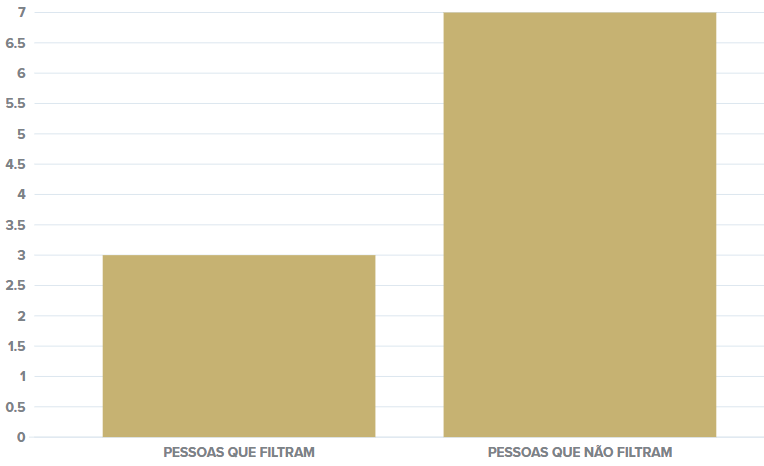

MORE CONNECTED?
The brazilians are increasingly connected. Therefore, it is possible to identify an increase of the midia's influence over people. They are increasingly more exposed to the news and information either from websites, or television. A survey conducted in 2020 by Avaaz (a non-profit association), about 7 out of every 10 brazilians believe in at least one fake news about the pandemic. Social networks being the fake news greatest percursors. 